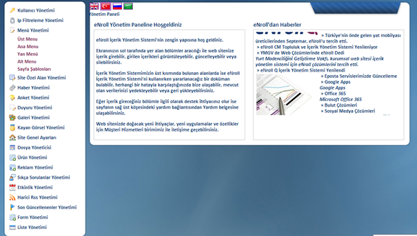
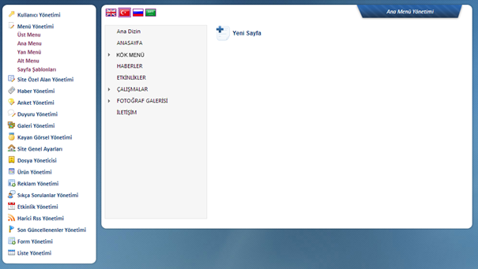
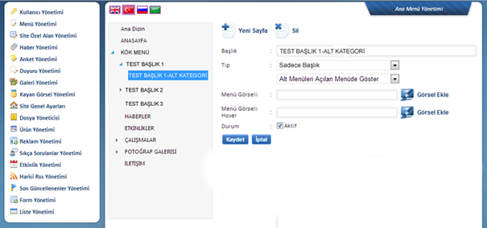
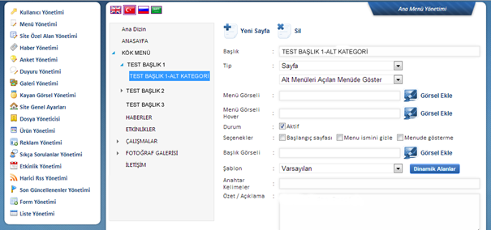
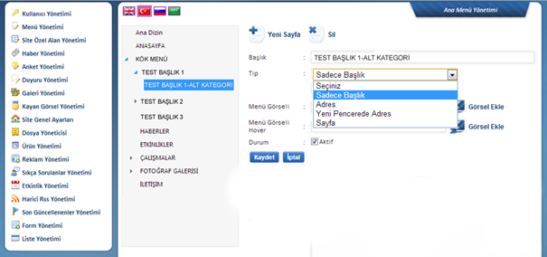
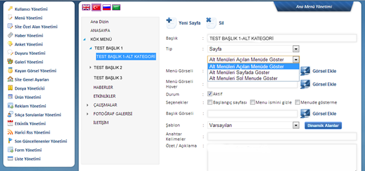
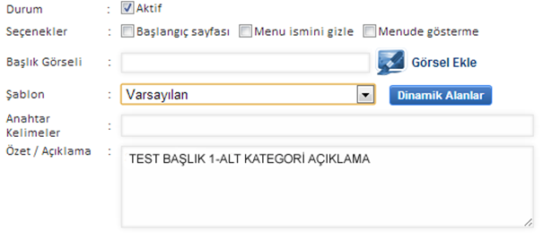
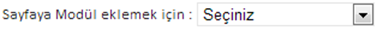
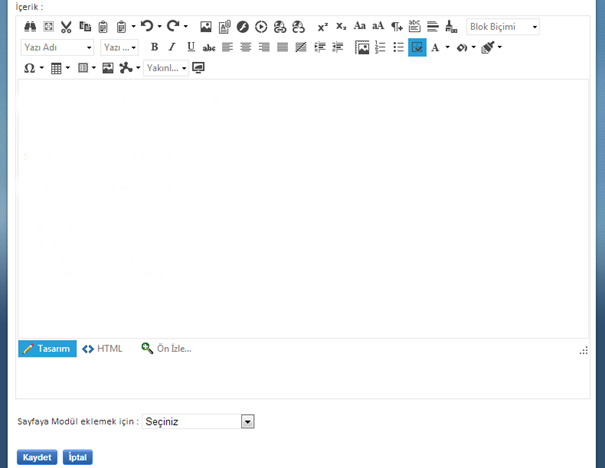

Menü Yönetimi bölümü size genel sayfalarýn kontrolünü saðlýyor. Sayfalarýn listesine Ana Menü üzerinden ulaþabilirsiniz.

Menü içeriðinin baðlý olduðu kategoriyi seçtikten sonra (örn. Ana Menü) orta alanda bu bölüm altýndaki içeriði görüntüleyebilirsiniz. Buradaki aðaç yapýsý menü ana baþlýklarýný ve onlara baðlý bulunan alt kategorileri göstermektedir.

Menüye yeni bir ana baþlýk eklemek için Kök Menü’yü seçerek Yeni Sayfa komutuyla sayfa oluþturulmaktadýr. Eðer var olan bir ana baþlýða alt kategori/sayfa eklenecekse baþlýða týkladýktan sonra Yeni Sayfa komutuyla içerik girilebilir.
Örn. Test Baþlýk 1 – Alt kategori ‘yi bir alt baþlýk olarak eklemek için Test Baþlýk 1 bölümüne týkladýk ve ardýndan orta alandan Yeni Sayfa butonuyla iþlem yaptýk:

Görüleceði üzere ayný düzenlemeler saðdaki dil seçimi deðiþtirilerek, sitede aktif olarak çalýþan diðer dillerde de gerçekleþtirilebilir.
Var olan sayfalar üzerinde çalýþmak için orta alanda gördüðünüz baþlýða týklamanýz sizi bu sayfanýn yönetimine ulaþtýracaktýr:

Baþlýk: Ýçerik baþlýðý
(Menü ismini gizle seçilmediði takdirde sayfalarýn üst bölümünde bu baþlýk yer alacaktýr.)
Tip:
Menüye ekleyeceðiniz sayfanýn tipini buradan belirtebilirsiniz. Eðer içeriði o anda gireceðiniz bir sayfa oluþturacaksanýz “Sayfa”, eðer týklandýðýnda gideceði bir adres olmayacak ve alt baþlýklarý olacak bir menü öðesi olacak ise “Sadece Baþlýk”, eðer kendi sitenizde daha önceden oluþturulmuþ bir sayfaya ya da siteniz dýþýndaki bir sayfaya gidecek ise URL ya da yeni bir pencerede açýlmasýný istiyorsanýz “Yeni Pencerede URL/Adres” seçeneðini iþaretlemeniz gerekmektedir.

Sadece Baþlýk: Kendi sayfasý ya da baðlantýsý olmayan, alt kategorilerine geçiþi saðlayacak baþlýklar için tercih edilmektedir. Týklanamaz, alt kategorisinde yer alan listeyi gösterir.
Url: Gerek site içinde, gerekse internet ortamýnda yer alan sayfalara baðlantý olarak kullanýlabilir. Ayrýca istenirse Word, Excel, Pdf dosyalarý gibi dokümanlara da köprülendirme yapýlabilir.
Sayfa: Kendi içeriði olan baþlýklarda bu seçenek kullanýlmalýdýr. Sayfa seçimi yapýlýnca alt alanda yardýmcý editör belirecektir, istenen içerik bu alana girilerek kaydedilebilir.
Ýçeriðin kendi alt kategorilerini ana menünün açýlýr alanýnda gösterebilir ya da baþlýða týklandýðý zaman geçilen sayfada grid olarak gösterme seçeneðini kullanabilirsiniz:

Baþlýk Görseli:
Menüde yer alacak baþlýk dinamik text olarak deðil, tercihinize göre hazýrlanmýþ imajlardan oluþuyorsa bu alandan görselin sunucuya yüklenmesi ve/veya yolunun ilgili alana gösterilmesi gerekmektedir.
Baþlýk Hover Görseli:
Mouse buton üzerine geldiðinde deðiþecek olan görsel bu alana eklenmelidir.
Aktif ve Yayýnda:
Bu alan iþaretli ise sayfa ya da baðlantýlara site üzerinde eklendiði yerden ulaþým mümkündür. Ancak iþaret kaldýrýlarak kaydedilirse, kullanýcýlar site üzerinde içeriði baðlantý olarak görmezler. Panel üzerinden eriþim ise aynen devam edecek olup, istenirse tekrar aktif halde kaydedilerek sitede yayýna alýnmasý saðlanabilir.

Açýklama:
Buraya girilen içerik arama motorlarýnda sayfanýz listelendiðinde ve site içinde arama sonuçlarýnda bulunduðunda sayfa içeriðinin bir özeti olarak gösterilecektir.
Baþlangýç Sayfasý: Siteniz içindeki herhangi bir sayfayý baþlangýç sayfasý olarak belirleyebilirsiniz. Bu durumda www.alanadiniz.com adresi týklandýðýnda, web siteniz seçtiðiniz bu sayfa ile açýlacaktýr.
Menü Ýsmini Gizle: Menüde verdiðiniz baþlýðý sayfalarda ayný yerde baþlýk þeklinde gösterme özelliðidir. Tercihinize göre gizleyebilir ya da kullanýcýnýn hangi baþlýkta olduðunu görebilmesi için aktif þekilde kullanabilirsiniz.
Menüde Gösterme: Site içinde bir sayfaya menüden ulaþým yerine, site içinde herhangi bir alandan baðlantýyla ulaþým saðlamak, baþlýðý ana menüde göstermeden kullanmak istenirse iþaretlenmelidir.

Sayfaya Modül Eklemek Ýçin: Ýçerik düzenlemelerine göre birden fazla uygulama þablonu oluþturmak mümkündür. Örneðin site genelinde deðil, bir kategori altýndaki sayfalarda bir reklam alaný belirsin istiyorsanýz buna göre bir þablon oluþturabilirsiniz. Bu alandan, Þablon Yönetimi alanýnda belirlenen uygulama seçenekleri görüntülenerek tercih yapýlabilir.
(*Þablon Yönetimi Site Genel Ayarlarý altýnda yer almaktadýr.)

Sayfa içeriði orta alanda yer alan yardýmcý editör üzerinden girilmektedir. Göreceðiniz üzere kullaným yapýsý Microsoft Office Word kullanýmýna çok yakýn olup, benzer özellikler taþýmaktadýr.
Her sayfaya ayrý bir Açýklama tanýtým yazýsý, bu sayfadaki içerikte yer alan ve önemli olan Anahtar Kelimeler seçimi alaný bulunmaktadýr. Burada göreceðiniz Görsel Ekle alaný özel uygulamalar için geçerlidir. Standard içeriklerin yer aldýðý sayfalarda bu alan boþ býrakýlmalýdýr.
Yapýlan düzenlemeler Kaydet ile kalýcý þekilde deðiþtirilebilir.
Var olan içeriðin düzenlenmesi için Menü Ýçerik Yönetimi üzerinden ilgili sayfaya ulaþmak yeterli olacaktýr. Yapýlan düzenlemeler Kaydet ile aktif olacaktýr.
*Kaydet butonu týklanmadan sayfa deðiþtirilirse bu düzenlemeler silinecektir.
Kategoriye baðlý baþlýklar liste içinde yukarý-aþaðý ok butonlarýyla kaydýrýlabilir. Bu þekilde tercihlerinize göre sýralama yapabilmeniz mümkündür.